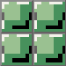
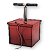
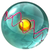

Available Blocks: 12  |
Breaker <shift> |
Atomizer <space> |
Test |
- Basic Controls
-
Moving
Press "A" to move left and "D" to move right.
Press "W" to jump.Other Controls
Press the "Space" key to open and close the atomizer.
Press the "Shift" key to activate the breaker to break blocks prematurely.
When the Atomizer is open, press "E" to shake the atoms and structures.Moving
Use the arrow buttons on the iPad to move left and right.
Use the "up" arrow button to jump.Other Controls
Tap the "Atomizer" image along the bottom to open and close the atomizer.
Tap the "Breaker" button to break blocks prematurely.
When the Atomizer is open, physically shake the iPad to shake the atoms and structures. - Throwing Blocks
-
As you play the game you may discover obstacles in your way. If you find a wall you can't pass through or a platform out of reach, try throwing a block!
How do I throw blocks?
To throw a block click the location you want the block to appear. Your character will then try to throw a block to the location you just clicked.
If you throw a block at one of the many light gray tiles that make up the level the block will replace that tile. If the created block is fragile, it might crumble, removing the thrown block and the gray tiles from the level. If the thrown block is slippery, when it crumbles it might loosen the replaced block causing it to fall. For more on block properties see the "Creating Blocks" section of the help menu.
Dark gray tiles cannot be removed or replaced. Blocks thrown at these dark gray tiles will land next to the tiles.
You can only have 12 player-created blocks in the world at one time. If you've thrown the maximum number of blocks try pressing the breaker button to remove them.
As you play the game you may discover obstacles in your way. If you find a wall you can't pass through or a platform out of reach, try throwing a block!
How do I throw blocks?
To throw a block tap the location you want the block to appear. Your character will then try to throw a block to the location you just tapped.
If you throw a block at one of the many light gray tiles that make up the level the block will replace that tile. If the created block is fragile, it might crumble, removing the thrown block and the gray tiles from the level. If the thrown block is slippery, when it crumbles it might loosen the replaced block causing it to fall. For more on block properties see the "Creating Blocks" section of the help menu.
Dark gray tiles cannot be removed or replaced. Blocks thrown at these dark gray tiles will land next to the tiles.
You can only have 12 player-created blocks in the world at one time. If you've thrown the maximum number of blocks try tapping the breaker button to remove them.
- Creating Blocks 1
-
Creating Blocks
Thrown blocks are not all the same! Some are fragile, some are hard, some slippery, and some are bouncy! Some blocks have a mixture of each of these properties! To succeed in Particles! you'll have to master block building in the Atomizer. To open the Atomizer, press the "Space" key or click the Atomizer button at the bottom of the screen.
When you open the atomizer you'll see four multicolored blocks along the right side and many small white spheres in the middle. The area containing the white spheres represents a repeating unit that will make up each thrown block. It's important to remember that each block is actually made up of thousands of the pattern represented in the atomizer.
To change the structure that makes up thrown blocks you can add atoms and connect them with bonds. Click and drag from one white sphere to another to create two atoms connected by a bond. To remove a bond, click the bond. Bonds cannot be created between atoms that are diagonal to each other.
You can have up to four different kinds of blocks at one time. To switch to another block, click the colored blocks on the right of the atomizer. The block that is currently displayed in the Atomizer will be the active block the character will throw.
Creating Blocks
Thrown blocks are not all the same! Some are fragile, some are hard, some slippery, and some are bouncy! Some blocks have a mixture of each of these properties! To succeed in Particles! you'll have to master block building in the Atomizer. To open the Atomizer, tap the "Atomizer" button at the bottom of the screen.
When you open the atomizer you'll see four multicolored blocks along the right side and many small white spheres in the middle. The area containing the white spheres represents a repeating unit that will make up each thrown block. It's important to remember that each block is actually made up of thousands of the pattern represented in the atomizer.
To change the structure that makes up thrown blocks you can add atoms and connect them with bonds. Tap and drag from one white sphere to another to create two atoms connected by a bond. To remove a bond, tap the bond. Bonds cannot be created between atoms that are diagonal to each other.
You can have up to four different kinds of blocks at one time. To switch to another block, tap the colored blocks on the right of the atomizer. The block that is currently displayed in the Atomizer will be the active block the character will throw.
- Creating Blocks 2
-
What kinds of blocks can I create?
Thrown blocks will have a mixture of three main properties: hardness, slipperiness, and bounciness. To get a feel for what kind of block you've made, try shaking the atomizer by pressing the "shake" button or "E" key. Watch how the atoms and structures move around in the atomizer to get an idea for how a thrown block might behave.
Hardness
Blocks with few atoms and bonds are very fragile and quickly crumble after being thrown. By adding bonds blocks become harder. Extremely hard blocks can only be broken using the "breaker" button.
Slipperiness
Some blocks can be very slippery because the structures that makes up the block are free to slide around one another rather than connected. Be careful when running on slippery blocks as it's very hard to stop! Slippery blocks are great for loosening up light gray tiles. Tiles that have been replaced by slippery blocks are likely to fall once the thrown block has crumbled! Falling blocks are dangerous so watch out below!
Bounciness
Bouncy blocks are great for helping you to get to platforms that are usually out of reach. Jumping on one of these blocks will cause you to bounce a bit higher than normal. Falling onto one of these blocks from a big height will give you a huge boost! Making a bouncy block can be a bit tricky. Think about what kinds of structures might give a block some spring...
What kinds of blocks can I create?
Thrown blocks will have a mixture of three main properties: hardness, slipperiness, and bounciness. To get a feel for what kind of block you've made, try phyically shaking the iPad. Watch how the atoms and structures move around in the atomizer to get an idea for how a thrown block might behave.
Hardness
Blocks without bonds are very fragile and quickly crumble after being thrown. By adding bonds, blocks become harder. Extremely hard blocks can only be broken using the "breaker" button.
Slipperiness
Some blocks can be very slippery because the structures that makes up the block are free to slide around one another rather than connected. Be careful when running on slippery blocks as it's very hard to stop! Slippery blocks are great for loosening up light gray tiles. Tiles that have been replaced by slippery blocks are likely to fall once the thrown block has crumbled! Falling blocks are dangerous so watch out below!
Bounciness
Bouncy blocks are great for helping you to get to platforms that are usually out of reach. Jumping on one of these blocks will cause you to bounce a bit higher than normal. Falling onto one of these blocks from a big height will give you a huge boost! Making a bouncy block can be a bit tricky. Think about what kinds of structures might give a block some spring...